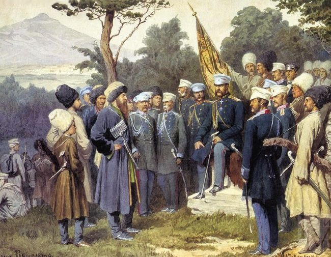

The Shamil You Never Knew
There probably isn’t a Lubavitcher Chassid who doesn’t know how to sing or hum the niggun Shamil and tell the moving story that the Rebbe told about the background to the tune. Many do not know that Shamil was a Caucasus warlord who murdered many Jews. Many also do not know additional and interesting details behind the tune and his story. * It has been 60 years since the Rebbe taught the niggun and we present its full story as well as describe the night the Rebbe taught the song while his entire body shuddered with sobs.

The time: 4:30 in the morning.
The place: 770, Simchas Torah 5719/1958, 60 years ago.
The skies over Brooklyn don’t look as they did yesterday and the day before, for it is Simchas Torah today and Chassidim who are by the Rebbe know that Simchas Torah is a different atmosphere; a different feeling. Everything looks different; not a regular day.
At this in-between time, when the first rays of the sun are about to appear to light up the skies of New York, the Rebbe arrived at the improvised beis midrash in the yard where hundreds of exhausted though exhilarated Chassidim wait. They know that soon there will begin one of the special events in the Lubavitch year, when the Rebbe will teach a new niggun. This has been the practice in recent years.
This event follows many hours of unusual exertion, as Chassidim walked on Tahalucha to nearby neighborhoods where they danced and brought joy. Upon returning, they joined the Rebbe’s farbrengen where they pushed and were shoved for several hours. Then began the special hakafos with the Rebbe, full of exuberance and joy, and this lasted for hours as the Rebbe lifted the crowd above all worldly concerns.
When hakafos were over, the Rebbe went up to the Rebbe Rayatz’s apartment on the second floor where he ate the holiday meal with the elder Chassidim, distinguished men, and those who had won a raffle. No wonder it was closer to morning than to the beginning of the night, but the night was not yet over. In a little while, the Rebbe would teach a niggun.
Rabbi Nachum Yitzchok Kaplan described it:
“That year, 5719, was the first time that my parents allowed me to stay up for when the Rebbe taught the new niggun. At three in the morning, we returned home after hakafos. Naturally, a boy who comes home at this hour would not be allowed to return to 770. But since I was already in the year before bar mitzva, I told my father, ‘I’m going back.’ I remember him telling me that I would nod off on the way and wouldn’t even manage to get there, but I did.
“The event took place in the shalash, which wasn’t big [the yard between 770 and 788, the adjacent office building. In those days, the yard turned into a shul when there was a large number of people – MZ.] The crowding was so great that it was impossible to enter through the doors as usual; you had to push. How would I, a 12-year-old, get in? I did what others my age did, go through the feet of the crowd.
“The crowd had been drinking and it was tense – the Rebbe would soon enter and the shoving was terrible. Under these crowded conditions, a pathway had to be made so the Rebbe could get through. This seemed to be an impossible feat. However, when the Rebbe entered, a path was made and the Rebbe ascended the small platform.
“The Rebbe’s face … I remember that I stood facing the Rebbe and his holy face was fresh and alert. A big smile was on his face; his face was lit up.
“Those who were strong stood around the small platform, which was nothing but a few milk crates tied together with a board over them. The Rebbe stood on the platform with some strongmen around who kept order. Still, they weren’t always able to prevent the occasional person falling into the Rebbe’s four cubits.”
The Rebbe grasped a bottle of mashke and poured. Not everyone got; just those who committed to add in the study of Chassidus. Everyone knew the condition and only those who made the commitment held out their hand to receive the blessing.
TALKING AND CRYING … RECOUNTING AND HURTING …
Suddenly, the Rebbe’s face turned particularly serious. “I heard this niggun from Chassidim, along with a story,” he began. And he began to tell the story of the brutal Shamil at length.
This was the first time that bearded Chassidim, their heads immersed in avoda, heard the name Shamil, leader of the Caucasian army, mass murderer, who was a bitter enemy of the Russian czar. What did this bloodthirsty individual have to do with Chassidim? And on Simchas Torah, no less?
The atmosphere was loaded and extremely serious. The Rebbe began to speak and sob, speak and cry:
“When Russia began to expand, as it conquered broad swaths of territory, they desired to conquer the Caucasus Mountains too. There resided people who were not civilized etc., and they had their own Tsar by the name of Shamil.
“Although the government people were more numerous than these mountain-dwellers, they still were unable to conquer them because of the difficulty in reaching them, as they lived in the high mountains.
“Until they deceived them, promising to make peace with them and give them all sorts of concessions etc., and in the end, they grabbed the leader Shamil and exiled him deep into Russia. Whether he was imprisoned or not, he was in exile.
“When he would remember and contemplate his position when he was in the high mountains, being free of the government and the chains of civilization and how now he was in bondage, he would be filled with great yearning and sing this tune whose beginning expresses the feeling of yearning, and the last part of the niggun which expresses the hope that he would finally go back to where he came from.”
Here, the Rebbe revealed that “when Jews heard this tune, they used it for avodas Hashem regarding the descent of the neshama, from a high roof to a deep pit.”
The Rebbe then expounded on the analog learned from the story, about the Jewish soul:
“Up above, the neshama was free, for it was united with G-dliness, as it’s written, ‘By the life of Havaya, before whom I stood.’ While down below, a person needs to know his standing and state, being bound within the body and animal soul, especially if he sinned and blemished and traversed the path. And even after he rectified this, the fact is that his service is ‘habitual,’ and even if his avoda is with enthusiasm and feelings of love and fear, joy and gladness of heart, even if he is a complete tzaddik, serving Hashem with ‘love in delights,’ there is the aspect of ‘there is a yesh who loves.’
“When one contemplates this, then feelings of yearning are aroused for his state when he was in the high mountains, the root of the neshama as it is in the aspect of ‘mountains’ ‘these are the Avos,’ from whom is passed on an inheritance to all the Jewish people, and to the high mountains before the tzimtzum, and similarly, regarding the feeling of hope in the last part of the niggun, that he is certain that ‘he will not be cast away,’ and ultimately, he will reach his destination, i.e., a far higher level than he was on before he descended below. For this is the purpose of the descent, that it is for an ascent, i.e., that he reach that level in which he unites with His Essence in the most literal sense.”
“I was a young boy, but I looked at the bachurim and their faces were ominous. The Rebbe finished telling the story but did not sing anything. The crowd waited for the Rebbe to start singing the niggun. After a few moments the Rebbe began to sing in a tremulous voice.”
He began with a weak and very thin voice, as he still had not calmed down from the crying which chopped up the niggun. The hearts of the Chassidim trembled.
R’ Kaplan continues to describe what happened:
“Because of Yom Tov, there was no microphone and the crowding was awful. Everyone wanted to hear. At first, the Rebbe spoke loudly, but as he continued to speak, he began to cry. When the Rebbe told the story of Shamil, his entire body trembled. ‘Shamil seeks his source and root; the neshama of a Jew,’ said the Rebbe’s sobbing voice. Around us it was silent.
“Following this moving scene, when the Rebbe cried so much, both with the story and the niggun, it wasn’t surprising that nobody could sing even a little of the tune. Usually, the way it was, the Rebbe taught a stanza and then the crowd sang it. Another stanza, and again the crowd sang it; several times. But the tune of Shamil the Rebbe sang once and twice, but nobody could catch on to even one note. It was only after the third time when the crowd began to get it a little.”
Not surprisingly, when the Rebbe told the chazan R’ Moshe Teleshevsky and the chozer R’ Yoel Kahn to repeat the niggun, they had a hard time. The Rebbe sang the niggun again and again but the crowd found it hard to grasp. The Rebbe motioned dismissively and stopped teaching the niggun and returned to his room.
It was six in the morning.
The event, which usually lasted 40 minutes, lasted an hour and a half.
Mordechai Gurary, who came that year for the first time to the Rebbe, remembers those moments, despite the decades that passed since then:
“The scene is fully alive before my eyes, how the Rebbe said the sicha as an introduction to the niggun and told about Shamil who was taken captive, and the nimshal of the neshama, and then sang the niggun.
“You could feel how the Rebbe lived and experienced everything he said and recounted, with the entire crowd being caught up in tremendous inspiration. Not a dry eye remained. I was also very emotional to the point that although I had planned on saying the SheHechiyanu blessing in my first yechidus in a few days, as was customary, being so emotional at this time I said the blessing then and there.”
REBBETZIN CHANA ASKED: WHICH NIGGUN DID HE TEACH?
The Chassidim dispersed in the attempt to catch some sleep before Shacharis with the Rebbe, at 10:00 as usual. Everyone knew that they needed to muster strength for the packed day ahead of them, Simchas Torah, that would end way past midnight.
Nachum Kaplan was tired. He woke up at noon. He rushed to 770 when suddenly, on the corner of Kingston and President, he met Rebbetzin Chana who knew him from when they had lived together in the Poking DP camp in Germany.
“Gut Yom Tov,” he said.
“Were you at the niggun last night?” she asked.
“Yes,” he replied.
“Are you going to shul now?”
When he said yes, she said, “Come, let us go together.”
As they walked together, she asked, “What niggun did he teach?”
“Shamil,” he said.
“What niggun is that?” she wondered.
Nachum shrugged. “I don’t know who Shamil was and I don’t know how to sing the niggun yet, but this I know, that the Rebbe cried a lot.” For the Rebbetzin, that was enough.
She continued to 770, accompanied by Kaplan, until they reached the entrance to the shalash (where the Rebbe’s car later used to be parked). Kaplan opened the door of the shul for her and from where she stood she began to look for the Rebbe.
The crowd was saying “Sisu v’Simchu” after the Torah reading and was dancing to the familiar Chabad niggun. Kaplan gently tapped the shoulder of a Chassid standing in front of the Rebbetzin. The Chassid turned around and when he saw the Rebbetzin he moved aside in respect. He tapped the shoulder of the person standing in front of him and one by one, everyone was alerted and two minutes later, a pathway opened between the Rebbetzin and her son, which allowed for eye contact between them. The Rebbetzin nodded to indicate, “Gut Yom Tov,” and the Rebbe nodded back. Then the Rebbetzin turned and left.
“It was a unique and awesomely dignified sight,” concluded R’ Kaplan.
SHAMIL AND HIS GANGS
The Caucasus, 1850.
Who was Shamil that the Rebbe spoke about on Simchas Torah?
The Imam Shamil was born in 5557/1797 and grew up among the tribes of the Caucasus Mountains. Shamil was a man of strength and violence by nature and quickly learned the “profession.’ He was famous at a young age as an outstandingly courageous warrior.
After the death of Sheik Ghazi Mullah during the battle of Gimry, Shamil took over and became the leader of the Caucasian resistance. This was in 5595/1835.
As soon as he came to power, he established a theocratic state (Imamate) that covered parts of Chechnya and Dagestan. Then began one of the hardest periods ever in the history of the Mountain Jews. Shamil announced a holy war against heretics. Thousands of people, including many Jews, were forced to convert to Islam and assimilate within the local population.
In the years that followed, he persecuted the Jews of the area who suffered both from the constant attacks on the part of Shamil’s gangs and from their neighbors. They robbed, killed and took many Jews captive. Some were sold as slaves and some were forced to convert to Islam.
The lives of the Jews were completely destroyed and they had to flee their homes and wander from place to place. They often had to beg their brethren to redeem them from their captors.
A particular incident is told in the history of the Caucasian Jews, that one time Shamil’s soldiers lay siege to one of the neighborhoods where Jews lived. The Jews managed to escape to a large fortress built by the Russian General Yermolov. The members of the armed band pursued them to the fortress and laid siege for fourteen days. The situation was unbearable since they had no food and nothing to drink. They prayed to Hashem with all their hearts for salvation. On the last day of the siege, it began to rain. The pits in the yard of the fortress became filled with clear water. A short while later, the Tsar’s soldiers arrived and Shamil’s band of guerrilla fighters retreated.
At some point, Shamil and his soldiers began to wage bloody battles against the Russian army, led by the Tsar, for the purpose of maintaining their independence.
Like all Western powers at the time, the Russians also wanted to establish an empire by conquering land on the length of their borders. The Tsar waged war on a number of fronts, the most famous being the war against the Turks (Ottomans) and the war against Persia. Part of the Russian expansion plans included the Caucasus region which they wished to conquer, but at the start of their invasion they realized that conquering the Caucasian Mountain region would not be as simple as they thought, for the response came in the form of violent opposition.
Although the Tsar’s soldiers had the advantage in numbers, they still found it difficult to conquer these areas because of the geographic advantage that the Caucasian fighters held, living in high mountains that were inaccessible. The tribes led by Shamil united and began fighting the Russians. They routed the would-be conquerors time and time again, and bravely faced off against the mighty Russian army for fifteen years of continuous fighting. During these years, the tribes even managed to capture members of the Tsar’s family which was a grave insult to the Tsar’s honor.
The daring and bravery of the wild soldiers of Shamil became a byword. Shamil was a far more aggressive leader than his predecessor and he made effective use of guerrilla tactics.
After many years of bitter battles, the Tsar realized that this was proving too difficult and he decided to deal deceptively with Shamil and his men. He sent delegations that offered to make a peace treaty, with benefits for Shamil and his men. Shamil was convinced and agreed.
A prearranged location was agreed upon for the meeting of the two sides. Shamil showed up on his mighty steed. When he saw the Russian soldiers, he jumped off his horse and went over to them, offering his sword as a sign of peace. That is when the Tsar’s soldiers grabbed him. This was on 22 Av 5619/1859. Under heavy guard he was led away by the Tsar’s soldiers. Masses of people stood along the route to see the captive warrior.
At first, he was imprisoned in a small village in Dagestan. Then he was exiled to Kaluga, a small out of the way city in the center of Russia, not far from Moscow. There, in exile, when he recalled his previous position as a free man, a man of courage, galloping on his horse without fear over the tall mountains, he would be filled with a great longing.
In his anguish, his appearance, that had formerly cast fear upon all who saw him, changed. In his final ten years of life he aged tremendously.
The niggun named for him was known among people in Kiev, where he was allowed to live out his final years, and it is almost certain that Chassidim in that city were the first to hear it. There is a version that says these were Jewish soldiers in the Russian army who served in the area of the Caucasus and they heard the tune and brought it back to civilization. It is also said that Jews served as translators between Shamil and the Russians.
YEARNING AND WILDNESS
Brooklyn, 5719/1958
Right before the day ended, Chassidim packed into the shalash to farbreng in honor of Simchas Torah. All washed their hands and sat facing the Rebbe.
At this farbrengen, the Rebbe spoke about Shamil yet again. This time too, he began with a brief introduction. “I heard this niggun a few years ago from Chassidim, along with a story…”
The Rebbe repeated the story at greater length with additional details and this time too, his voice was choked with tears. Then he began to sing the niggun with the crowd humming quietly, trying to connect to the depth of its meaning. The Rebbe repeated the niggun again and again, and this time, more of them caught on and were able to repeat it, with the Rebbe correcting them now and then.
When the Chassidim finished the niggun, the Rebbe added, “Already at the beginning of the niggun whose content is one of yearning, the “wildness” of a free man is noticeable, because one who is essentially a free man, even when he is locked away, the feeling of freedom is perceptible in him. Like the parable of the prince who even when he is in captivity, it is detectable that he is a prince. So too, with the descent of the soul below, even when it is here below, its essential freedom is noticeable in it, the aspect of “the broadness of essence.” This very point empowers one to do his avoda without being fazed by impediments and obstacles in the world, and through this achieve the ultimate ascent, the ascent to the literal Atzmus/Essence.”
NOT LIKE KOL NIDREI
To the great surprise of the Chassidim, the next day too, in the midst of the special farbrengen for Shabbos B’Reishis, the Rebbe repeated the explanation a third time and the nimshal and lesson from the story of Shamil. Once again, the Rebbe cried.
This time, when they sang the niggun, the crowd knew it better but occasionally, the Rebbe corrected mistakes by stopping them and explaining the idea behind the various twists in the niggun: “In a niggun associated with power, the order is that the voice continuously rises. However, with a niggun associated with yearning, it is the opposite, for the more the yearning that is felt – the expression of the self-diminishes, so the niggun becomes quieter, to the point of a ‘thin silent voice.’
“Even one who does not feel the longing, when it comes to the niggun at least, it should be sung in the said manner. Regardless of how he feels it, the niggun should be sung not like Kol Nidrei, where the voice is raised each time; on the contrary.”
After the Rebbe pointed out the mistakes in how the niggun was sung, the Chassidim began to sing it again, this time, without errors.
In the months that followed, when they sang the niggun, there were instances when they were not accurate and the Rebbe corrected them.
Five months later, at the Purim farbrengen, the Rebbe suddenly began singing the niggun alone in a loud tone, repeating it three times in a row, and each time, the crowd sang it after the Rebbe. Interestingly, at this farbrengen too, nearly half a year after it was taught, it was necessary to correct some mistakes in the way that the Chassidim were singing it.
Since then, Chassidim have often sung Shamil on various occasions and farbrengens. There were times that it was done by instruction of the Rebbe, and after the crowd began to sing, he joined in.
A surprising and moving incident occurred on 20 Av 5720/1960, the Rebbe’s father’s yahrtzait. That year, it came out on Shabbos and the Rebbe was the chazan. At the piyut of “Keil Adon” in Shacharis, at the words “p’er v’chavod,” they could suddenly hear from under the tallis, a yearning cry from the heart, singing the words to the tune of Shamil, and so it continued until the end of the piyut.
In later years, there were chazanim in 770 who used the tune of Shamil for the words “Mimkomach” in K’dusha in Shacharis of Shabbos. The Rebbe encouraged this on a number of occasions, using his hand motions to spur on the singing. Since then, in many Chabad shuls around the world, this niggun has become the way K’dusha is sung.
“A niggun that a Rebbe davened with is on a higher level than even a ‘niggun mechuvan’ (a niggun merely sung at a farbrengen),” says Rabbi Lev Liebman, researcher of Chassidic niggunim, based on what is explained in the sicha of Pesach 5703. “It is important to note that this niggun is the only one of the 14 niggunim that the Rebbe taught that is without words, and it is known that a niggun without words is loftier than a niggun with words.”
R’ Leibman said that this niggun has an extreme element of is’hapcha (spiritual transformation), for Shamil was a mass murderer and an anti-Semite. The period of his rule was exceedingly difficult for the Caucasian Jews. The Geula depends on the birur of Yishmoel and Shamil was a Moslem. So perhaps we can say that the Rebbe took a tune from Yishmoel and elevated it to k’dusha. Who knows, maybe this will lighten our burden of galus by the Yishmaelim.
GENTILES RESPOND TO THE NIGGUN
The story of Shamil, it turns out, is known not only among Jews. R’ Michoel Reinitz, shliach in Rechovot, relates that when he was a bachur in 5751, he traveled to Charkov on shlichus with a friend. “It was winter and one Shabbos, a bachur came to us from Moscow and he brought a treasure with him. What was the treasure? Kosher beef sausages. It wasn’t a small thing since we hadn’t eaten meat since we arrived on shlichus. This was the first Shabbos we could eat meat.
“That Shabbos there was a farbrengen with the shliach, Rabbi Moshe Moskowitz, in his home. The bachur who brought the sausages from Moscow imbibed some mashke and we were all in uplifted spirits.
“We sang Chassidic niggunim on our walk from the shliach’s house to the hotel we were staying in. When we arrived at the hotel, we were singing Shamil and we sang it again and again.
“As we went up the steps singing Shamil, two distinguished looking businessmen came toward us. They stopped and asked us in surprise: What connection do you have with this song?
“We told them: What do you mean? It’s a Chassidic niggun!
“They said: Oto Shamil’ski melodya – that is the tune of Shamil.
“‘What do you know about Shamil?’ we asked.
“They told us what the Rebbe related, more or less, that this was a tune that he sang when he was in exile, and they actually come from that part of the Caucasus.
“If that wasn’t enough, Shamil continued to accompany us throughout shlichus. In the summer, we took the kids in camp to the zoo. There, we were amazed to see a kiosk with a sign, ‘Shamil.’ We went over to the owner and asked him why he called his kiosk by that name. He said he came from the Caucasus area and they had a revered leader by the name of Shamil who fought the Russians until he was taken captive.
“We asked him: Is there a special tune associated with Shamil?
“He said: Sure! And he began to sing it. They don’t sing it with all the ‘kneitchen’ as we do, but that was the tune that he sang.”
DON’T MISS OUT
R’ Nissan Gordon, the Chassidic writer, wrote back in those days, “If you visit on Simchas Torah in Lubavitch, my advice is: For heaven’s sake, don’t miss the new niggun that is born in the early morning hours, a niggun that comes to you after a night of tremendous joy in the Torah and is accompanied by a wealth of explanations that will satiate you with the joy of Torah for the rest of the year.”
THE WHOLE STORY WAS FOR THE SAKE OF THE NIGGUN
About two and a half months after Simchas Torah 5719, on 6 Teves, R’ Reuven Dunin had yechidus with the Rebbe.
R’ Reuven took the opportunity to ask the following: The Rebbe told about Shamil as a mashal for the neshama. The fact that they were able to deceive Shamil, does that mean that the neshama can have an irrevocable descent?
The Rebbe: The G-dly soul always returns to its source, and a component of its ascent is that it descends again, a second and third time, and makes corrections.
The entire story of Shamil is only for the mashal and only came to be in order to extract the niggun and the lesson in avodas Hashem, and the avoda needs to be like the end of the tune, with hope of returning.
And so it is, the neshama always returns, and even when, G-d forbid, there is a slip-up and one sins ch” v, one has to carry on with joy, because this is what Hashem wants.
***
At one of R’ Reuven’s farbrengens they sang Shamil. This led him to share what bothered him at that time, that made him ask the Rebbe to explain to him the significance in yechidus.
This is what R’ Reuven said in his characteristic way (from a recording):
“At one of the farbrengens, the Rebbe began to express wonder – how did they manage to get Shamil down from those mountains? They fooled him and in the end they put him away there, and in this state of exile this tune of hope and longing for the high mountains burst forth. When the Rebbe said they had fooled him, this bothered me because if it’s a mashal for the neshama, that means it is possible for it to ‘get eaten’ here. The Rebbe explained that this is a mashal and a mashal is not always exactly matched to the nimshal.”
THE SONG THAT TOUCHED THE WORLD-RENOWNED COMPOSER
When Nicho’ach volume 4 was produced, which featured the niggun Shamil, the Rebbe said they should rerecord the niggun, this time with a violin. The producers did so and the new version appeared on later records.
Every instruction of a “Rebbe” has an outcome, as it would seem from the story of R’ Shmuel Spritzer of Crown Heights. At the time our story began, in 5730, he was a bachur, and he went with his friend, R’ Shmuel Langsam, to Portland, Oregon on Merkos Shlichus.
That year there was a special instruction from the Rebbe to all going on Merkos Shlichus to hold a Chassidic farbrengen wherever they went. Many bachurim returned at the end of the summer to 770 with stories of the farbrengens they held.
R’ Spritzer and his friend also made a farbrengen. It was held in the home of the musician Professor Bloch. The attendees sat down but at the request of the host the bachurim waited to start the program until the arrival of an old, dear friend, Leonard Bernstein. This famous composer, conductor and pianist, was an American Jew who is considered one of the foremost American composers of the 20th century, who wrote major compositions and made a tremendous impact on modern music.
Bernstein showed up shortly before sunset and the bachurim asked him to put on tefillin. He refused.
Since R’ Spritzer learned in yeshiva and had no idea who Bernstein was, he asked him what he did for a living. Bernstein said, “I’m a conductor.”
Bernstein asked the bachurim to sing something. Spritzer said he didn’t want to sing but he would be happy to play something for him called Shamil, from a recording he had.
“I chose this niggun because of the story I heard about the recording of the niggun in 5723,” said R’ Spritzer to Beis Moshiach. This is what he said:
A gentile violinist was hired to play the niggun. He said that when he played the niggun he began to sweat and feel strange sensations in his body. His playing on that album was outstanding, different and more moving than all his previous work.
“You know,” said Bernstein to the people in the room, “as a Jew, I have a lot of music in my soul.”
“Then you’re in the right place,” said Spritzer.
“How do you know?” asked Bernstein.
“Because even your sigh is heard in heaven like the sigh of Shamil.”
“Who is Shamil?” asked Bernstein.
Spritzer said, “You’ll get to know him from the song I am about to play. You and he have a lot in common.”
Spritzer pressed the button and the niggun began to play. Bernstein and everyone in the room listened closely.
Bernstein listened to the song attentively and said, “I like this song; I feel connected to it. I don’t know how to explain it, but I feel a feeling of release (i.e., freedom).”
“I’ll explain it to you,” Spritzer said, “but first, put on tefillin.”
Sunset was only a few short minutes away and Bernstein turned to Spritzer and said, “There is something I must understand, why did you choose this specific song?”
“Because I like it and I felt that you needed to hear it,” Spritzer said.
“You understand music,” Bernstein said. “I will put on tefillin if you promise me that you will work in music in the future.” Spritzer agreed, and Bernstein put on tefillin for the first time in his life.
Years later, Bernstein’s travels took him to Boston. He met Rabbi Chaim Ciment, the shliach in Boston, who asked him to put on tefillin. This time, Bernstein agreed. As Rabbi Ciment helped him to put on the tefillin, Bernstein hummed Shamil to himself.
The shliach was astounded by this and asked, “How do you know this tune?”
Bernstein said, “A decade ago, one summer evening, when I heard Shamil’s song for the first time, I heard a deep internal call. I heard Shamil, I heard myself … That was the first time I put on tefillin.”
The shliach later called the secretariat to try and found out who was on shlichus in that city in that year.
“Later on, the Rebbe’s secretary told me the sequel,” said R’ Spritzer, “and that’s how I found out the details.”
Menachem Ziegelboim. "The Shamil You Never Knew." Beis Moshiach (November 7, 2018).